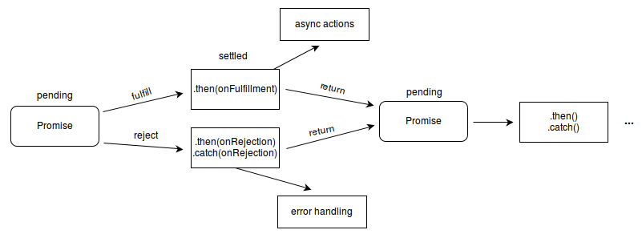

你是怎么理解ES6中 Promise的？使用场景有哪些？
参考答案
一、介绍
Promise ，译为承诺，是异步编程的一种解决方案，比传统的解决方案（回调函数）更加合理和更加强大
在以往我们如果处理多层异步操作，我们往往会像下面那样编写我们的代码
doSomething(function(result) {
doSomethingElse(result, function(newResult) {
doThirdThing(newResult, function(finalResult) {
console.log('得到最终结果: ' + finalResult);
}, failureCallback);
}, failureCallback);
}, failureCallback);阅读上面代码，是不是很难受，上述形成了经典的回调地狱
现在通过Promise的改写上面的代码
doSomething().then(function(result) {
return doSomethingElse(result);
})
.then(function(newResult) {
return doThirdThing(newResult);
})
.then(function(finalResult) {
console.log('得到最终结果: ' + finalResult);
})
.catch(failureCallback);瞬间感受到promise解决异步操作的优点：
- 链式操作减低了编码难度
- 代码可读性明显增强
下面我们正式来认识promise：
状态
promise对象仅有三种状态
pending（进行中）fulfilled（已成功）rejected（已失败）
特点
- 对象的状态不受外界影响，只有异步操作的结果，可以决定当前是哪一种状态
- 一旦状态改变（从
pending变为fulfilled和从pending变为rejected），就不会再变，任何时候都可以得到这个结果
流程
认真阅读下图，我们能够轻松了解promise整个流程

二、用法
Promise对象是一个构造函数，用来生成Promise实例
const promise = new Promise(function(resolve, reject) {});Promise构造函数接受一个函数作为参数，该函数的两个参数分别是resolve和reject
resolve函数的作用是，将Promise对象的状态从“未完成”变为“成功”reject函数的作用是，将Promise对象的状态从“未完成”变为“失败”
实例方法
Promise构建出来的实例存在以下方法：
- then()
- then()
- catch()
- finally()
then()
then是实例状态发生改变时的回调函数，第一个参数是resolved状态的回调函数，第二个参数是rejected状态的回调函数
then方法返回的是一个新的Promise实例，也就是promise能链式书写的原因
getJSON("/posts.json").then(function(json) {
return json.post;
}).then(function(post) {
// ...
});catch
catch()方法是.then(null, rejection)或.then(undefined, rejection)的别名，用于指定发生错误时的回调函数
getJSON('/posts.json').then(function(posts) {
// ...
}).catch(function(error) {
// 处理 getJSON 和 前一个回调函数运行时发生的错误
console.log('发生错误！', error);
});Promise 对象的错误具有“冒泡”性质，会一直向后传递，直到被捕获为止
getJSON('/post/1.json').then(function(post) {
return getJSON(post.commentURL);
}).then(function(comments) {
// some code
}).catch(function(error) {
// 处理前面三个Promise产生的错误
});一般来说，使用catch方法代替then()第二个参数
Promise 对象抛出的错误不会传递到外层代码，即不会有任何反应
const someAsyncThing = function() {
return new Promise(function(resolve, reject) {
// 下面一行会报错，因为x没有声明
resolve(x + 2);
});
};浏览器运行到这一行，会打印出错误提示ReferenceError: x is not defined，但是不会退出进程
catch()方法之中，还能再抛出错误，通过后面catch方法捕获到
finally()
finally()方法用于指定不管 Promise 对象最后状态如何，都会执行的操作
promise
.then(result => {···})
.catch(error => {···})
.finally(() => {···});构造函数方法
Promise构造函数存在以下方法：
- all()
- race()
- allSettled()
- resolve()
- reject()
- try()
all()
Promise.all()方法用于将多个 Promise 实例，包装成一个新的 Promise 实例
const p = Promise.all([p1, p2, p3]);接受一个数组（迭代对象）作为参数，数组成员都应为Promise实例
实例p的状态由p1、p2、p3决定，分为两种：
- 只有
p1、p2、p3的状态都变成fulfilled，p的状态才会变成fulfilled，此时p1、p2、p3的返回值组成一个数组，传递给p的回调函数 - 只要
p1、p2、p3之中有一个被rejected，p的状态就变成rejected，此时第一个被reject的实例的返回值，会传递给p的回调函数
注意，如果作为参数的 Promise 实例，自己定义了catch方法，那么它一旦被rejected，并不会触发Promise.all()的catch方法
const p1 = new Promise((resolve, reject) => {
resolve('hello');
})
.then(result => result)
.catch(e => e);
const p2 = new Promise((resolve, reject) => {
throw new Error('报错了');
})
.then(result => result)
.catch(e => e);
Promise.all([p1, p2])
.then(result => console.log(result))
.catch(e => console.log(e));
// ["hello", Error: 报错了]如果p2没有自己的catch方法，就会调用Promise.all()的catch方法
const p1 = new Promise((resolve, reject) => {
resolve('hello');
})
.then(result => result);
const p2 = new Promise((resolve, reject) => {
throw new Error('报错了');
})
.then(result => result);
Promise.all([p1, p2])
.then(result => console.log(result))
.catch(e => console.log(e));
// Error: 报错了race()
Promise.race()方法同样是将多个 Promise 实例，包装成一个新的 Promise 实例
const p = Promise.race([p1, p2, p3]);只要p1、p2、p3之中有一个实例率先改变状态，p的状态就跟着改变
率先改变的 Promise 实例的返回值则传递给p的回调函数
const p = Promise.race([
fetch('/resource-that-may-take-a-while'),
new Promise(function (resolve, reject) {
setTimeout(() => reject(new Error('request timeout')), 5000)
})
]);
p
.then(console.log)
.catch(console.error);allSettled()
Promise.allSettled()方法接受一组 Promise 实例作为参数，包装成一个新的 Promise 实例
只有等到所有这些参数实例都返回结果，不管是fulfilled还是rejected，包装实例才会结束
const promises = [
fetch('/api-1'),
fetch('/api-2'),
fetch('/api-3'),
];
await Promise.allSettled(promises);
removeLoadingIndicator();resolve()
将现有对象转为 Promise 对象
Promise.resolve('foo')
// 等价于
new Promise(resolve => resolve('foo'))参数可以分成四种情况，分别如下：
- 参数是一个 Promise 实例，
promise.resolve将不做任何修改、原封不动地返回这个实例 - 参数是一个
thenable对象，promise.resolve会将这个对象转为Promise对象，然后就立即执行thenable对象的then()方法 - 参数不是具有
then()方法的对象，或根本就不是对象，Promise.resolve()会返回一个新的 Promise 对象，状态为resolved - 没有参数时，直接返回一个
resolved状态的 Promise 对象
reject()
Promise.reject(reason)方法也会返回一个新的 Promise 实例，该实例的状态为rejected
const p = Promise.reject('出错了');
// 等同于
const p = new Promise((resolve, reject) => reject('出错了'))
p.then(null, function (s) {
console.log(s)
});
// 出错了Promise.reject()方法的参数，会原封不动地变成后续方法的参数
Promise.reject('出错了')
.catch(e => {
console.log(e === '出错了')
})
// true三、使用场景
将图片的加载写成一个Promise，一旦加载完成，Promise的状态就发生变化
const preloadImage = function (path) {
return new Promise(function (resolve, reject) {
const image = new Image();
image.onload = resolve;
image.onerror = reject;
image.src = path;
});
};通过链式操作，将多个渲染数据分别给个then，让其各司其职。或当下个异步请求依赖上个请求结果的时候，我们也能够通过链式操作友好解决问题
// 各司其职
getInfo().then(res=>{
let { bannerList } = res
//渲染轮播图
console.log(bannerList)
return res
}).then(res=>{
let { storeList } = res
//渲染店铺列表
console.log(storeList)
return res
}).then(res=>{
let { categoryList } = res
console.log(categoryList)
//渲染分类列表
return res
})通过all()实现多个请求合并在一起，汇总所有请求结果，只需设置一个loading即可
function initLoad(){
// loading.show() //加载loading
Promise.all([getBannerList(),getStoreList(),getCategoryList()]).then(res=>{
console.log(res)
loading.hide() //关闭loading
}).catch(err=>{
console.log(err)
loading.hide()//关闭loading
})
}
//数据初始化
initLoad()通过race可以设置图片请求超时
//请求某个图片资源
function requestImg(){
var p = new Promise(function(resolve, reject){
var img = new Image();
img.onload = function(){
resolve(img);
}
//img.src = "https://b-gold-cdn.xitu.io/v3/static/img/logo.a7995ad.svg"; 正确的
img.src = "https://b-gold-cdn.xitu.io/v3/static/img/logo.a7995ad.svg1";
});
return p;
}
//延时函数，用于给请求计时
function timeout(){
var p = new Promise(function(resolve, reject){
setTimeout(function(){
reject('图片请求超时');
}, 5000);
});
return p;
}
Promise
.race([requestImg(), timeout()])
.then(function(results){
console.log(results);
})
.catch(function(reason){
console.log(reason);
});Promise是什么？
Promise是一个代表异步操作最终完成或失败的对象。它有三种状态：
- Pending（进行中）：初始状态，既未完成也未失败。
- Fulfilled（已成功）：操作成功完成。
- Rejected（已失败）：操作失败。
特点
- 单次使用：一旦Promise的状态改变，它就变得不可逆。
- 链式调用：可以链接多个
.then()和.catch()方法。 - 错误冒泡：错误可以从链中的一个Promise传递到下一个。
使用场景
- 异步操作：处理需要时间的异步操作，如网络请求、文件读写等。
- 并发控制：使用
Promise.all()来并行处理多个异步操作，并等待它们全部完成。 - 错误处理：集中处理异步操作中的错误。
- 串行任务：按顺序执行一系列依赖前一个结果的异步操作。
- 定时器：使用
setTimeout()或setInterval()与Promise结合，实现定时执行。
注意事项
- Promise是单次使用的，一旦状态改变，无法再次改变。
- 使用
.catch()或.finally()来处理Promise链中的错误和清理资源。 - 避免在Promise链中混用
return和await，这可能导致意外的行为。 - 理解Promise的状态和执行顺序对于编写高效的异步代码至关重要。